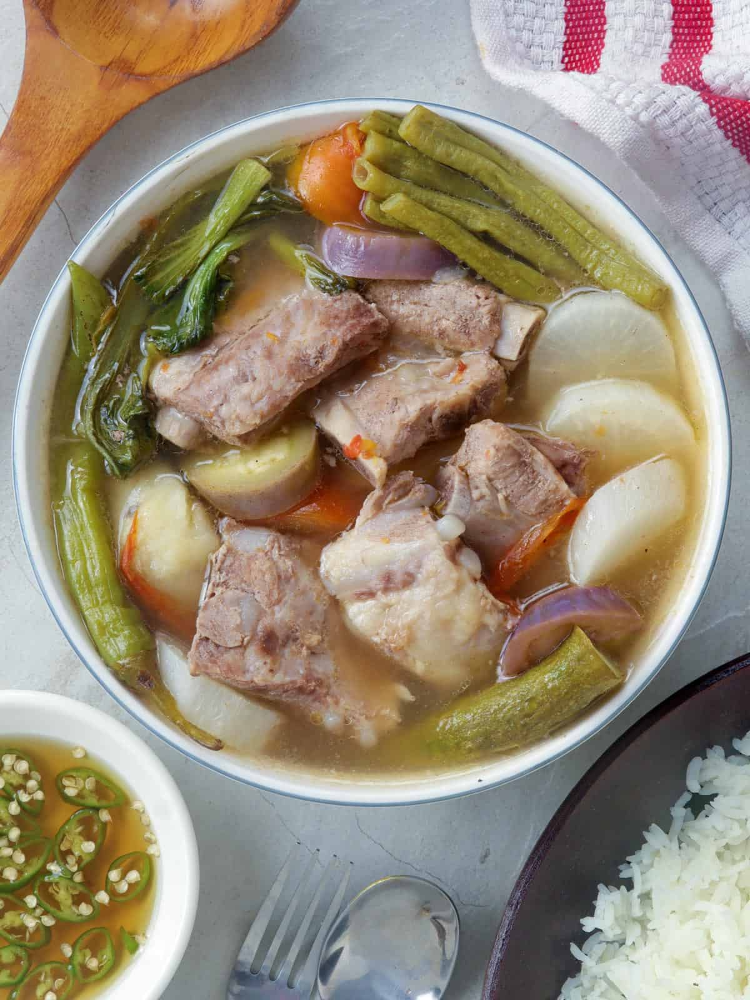

Home
Sinigang

Description
Sinigang is a popular Filipino sour and spicy soup made with meat (usually pork or chicken) and vegetables in a tangy broth.
Ingredients
- Pork shoulder
- Chicken
- Tomatoes
- Okra
- String beans
- Cabbage
- Soy sauce
- Vinegar
- Garlic
- Bay leaves
Steps
- Combine the meat, soy sauce, and garlic then marinade for at least 1 hour
- Heat the pot and put-in the marinated meat. Cook this all up for a few minutes
- Pour the remaining marinade including the garlic.
- Add water, whole peppercorn, and dried bay leaves. Then bring your mixture to a boil. Simmer for 40 minutes to 1 hour
- Put the vinegar inside and simmer for 12 to 15 minutes
- Add salt to taste
- Serve hot. Share and enjoy!